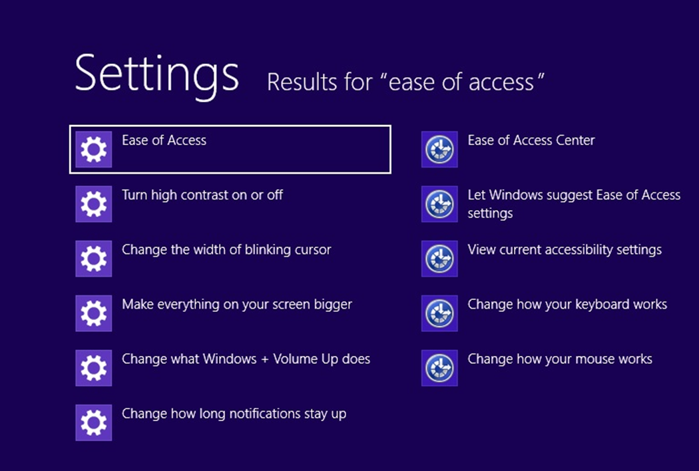
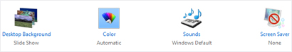

Personalization
Personalize your pc
If you spend a lot of time using your pc, you can make it reflect who you are and what you care about. Make yourself at home on the Start screen and arrange it to your liking. Create tiles for your favorite people or websites and drag them anywhere you want—or put similar tiles in their own group. Pin your favorite apps to the Start screen and remove the ones you don't use. You can even change the background and color on your Start screen to match your mood.
With Windows, you can make your pc your own.
Change your background, colors, and account picture
In Windows 8 and Windows RT, there are a few new places to show your favorite pictures and colors. On the Start screen, you can change the background and color. The background shows up only on Start, but the color you pick shows up in a few other places too, like the charms and the sign-in screen. You can also make sure there's a favorite photo waiting to greet you on your lock screen, and choose a few apps to show you info and updates you might have missed while your pc was locked. And you can add some excitement to your account picture — if you have a webcam, you can create a video clip to use instead of a photo. Or if you have photo editing apps, you can use them to add some finishing touches to a photo.
Here's how to try out these new picture and color options:
- 1. Open the Settings charm, and then tap or click Change pc settings.
- 2. Tap or click Personalize, and then change the options you want.
Themes and desktop backgrounds
All of the personalization settings you know and love are still here too, and you can still use them to personalize your desktop.
Here's how to check out the brand new themes and desktop backgrounds:
- • Open the Search charm, enter personalization, and then tap or click Settings.
- • Tap or click Personalization.
- • If you don't see something you like, you can download more themes, or even create your own, from this
same place.
Customize the Start screen
Just like you had a Start menu in Windows 7, you have a Start screen in Windows 8 and Windows RT. It has all of the info you care about in one place. You can just glance at the tiles to get the latest headlines, real-time updates, and info, or you can open apps, websites, contacts, and folders.
Here are the quickest ways to get to Start:
- • With touch, swipe in from the right edge of your screen, and then tap Start.
- • With a mouse, move your pointer to the upper-right or lower-right corner, and then move it up or down and clickStart. (Or, point to the lower-left corner, and click Start when it appears.)
- • With a keyboard, press the Windows logo key .
So arrange Start any way you want it, and put your favorite apps, people, and websites front and center. Here are a few options you can try.
Create tiles for your favorite people and places
A tile is an app or content (like a website, contact, or folder) that you can open from the Start screen. So if you have a website that you visit every day or people that you chat with all the time, you might want to create tiles for them on Start so you can get to them quickly.
When you come across a website, contact, or folder that you want to add to Start, here's how:
- • To pin a website or contact from an app, open theapp commands and tap or click Pin to Start.
- • To pin a folder, open it in File Explorer, press and hold or right-click it, and then tap or click Pin to Start.
Pin or unpin apps
Some apps that are installed on your pc might not be pinned to Start. But you can always pin them if you want them there. On the Start screen, open theSearch charm, select the app you want to pin to open itscommands, and then tap or click Pin to Start.
And if there are apps you don't use, you can unpin them from Start. On the Start screen, select an app to open itscommands, and then tap or click Unpin from Start. If you unpin an app, it's still installed on your pc, so you can always find it again with the Search charm.
Rearrange and resize tiles
To move a tile, drag it up or down, and then drag it anywhere you want it. (You don't need to press and hold.) You can arrange the tiles any way you want. Put similar tiles together, group all your favorites, or create a "Work" group for the apps for your job.
Here's how to name a group of tiles:
- • Touch the Start screen with two or more fingers, and then pinch them toward each other to zoom out. (If you're using a mouse, click theZoom .)
- • Select the group of tiles you want to name, and then tap or click Name Group.
- • If a tile isn't fitting in the spot you want, you can make it larger or smaller. Just select the tile on the Start screen to open the app commands and then tap or click Larger or Smaller. (Some tiles can't be resized.)
Rearranging tiles on Start
In Windows 8 and Windows RT, you have lots of options to help you set up Start in a way that's right for you. You can create groups, show updates on tiles, and move tiles around for better access to your favorite people, websites, and more. Or, you can create a simple Start with just a few choices. Take a few minutes to move and resize tiles to see what works best for you.
| What you can do | How to do it |
|---|---|
Rearrange tiles |
|
Group tiles together |
|
Name groups |
|
Resize tiles (only available on some tiles) |
|
Turn tile updates on or off (only available on |
|
Get started with themes
In Windows, you can use themes to help make your desktop feel a little more like your own. Themes change the desktop background, window border color, sounds, and screen saver on your pc all at once, and you can switch between themes as often as you like. You can also create your own themes, and share them with friends
and family.
What's a theme?
A theme is a combination of pictures, colors, and sounds. Themes include:
Parts of a theme
- • A desktop background. A picture, color, or design that acts as a backdrop to the open windows on your desktop. The desktop background can be a single picture or a slide show. You can choose from the desktop background pictures that come with Windows, or you can use your own pictures.
- • A window border color. The color of your window borders and taskbar. A theme can include one specific window border color, or a color can be chosen automatically based on the colors in the desktop
background picture. - • Sounds. A collection of related sounds that you hear when events happen on your pc. An event can be an action that you do, like signing in to your pc, or something that your pc does, like letting you know when you get a new email.
- • A screen saver. A moving picture or pattern that appears on your pc screen when you haven’t used the mouse or keyboard for a certain period of time. The screen saver is turned off in the themes that come with Windows, but you can turn it on and add one to a theme. For more info about screen savers, see How to use screen savers.
You can find all of your themes in Personalization in Control Panel. Tap or click any theme to apply it to
your desktop.
Open Personalization by swiping in from the right edge of the screen, tapping Search (or if you're using a mouse, pointing to the upper-right corner of the screen, moving the mouse pointer down, and then clicking Search), entering Personalization in the search box, tapping or clicking Settings, and then tapping or clicking Personalization.
In Personalization in Control Panel, there are four types of themes.
- • My Themes. Themes that you've created, made changes to, saved, or downloaded. Any time you change a theme, the new settings appear here as an unsaved theme.
- • Windows Default Themes. Windows themes you can use to personalize your pc. Most of them include a desktop background slide show.
- • Installed Themes. Themes that were created by your pc manufacturer or other non-Microsoft providers.
- • High Contrast Themes. Themes that make items on your screen easier to see. The High Contrast themes don't include automatic window border colors or desktop background slide shows.
Creating themes
You’re not limited to the themes that come with Windows—you can create customized themes using your own pictures and screen savers, and choose the colors and sounds that go along with them. To get started, tap or click any theme to apply it to your desktop. Then change each part of the theme until the desktop background, window border color, sounds, and screen saver are just how you want them to be. All of your changes will be saved under My Themes as an unsaved theme.

To create a theme
- 1. Open Personalization by swiping in from the right edge of the screen, tapping Search (or if you're using a mouse, pointing to the upper-right corner of the screen, moving the mouse pointer down, and then clicking Search), entering Personalization in the search box, tapping or clicking Settings, and then tapping or clicking Personalization.
- 2. To change the desktop background, tap or click Desktop Background, browse to the pictures you want to use, select the check boxes for the pictures that you want to include in your slide show, and then tap or click Save changes.
- 3. To change the color of your window borders and taskbar, tap or click Window Color, and then do one of
the following:- Tap or click Automatic to let Windows choose a color automatically based on the colors in your desktop background picture, and then tap or click Save changes
- – or –
- Tap or click the color that you want to use, and then tap or click Save changes.

The automatic window color option - 4. To change the sounds you hear when something happens on your computer, tap or click Sounds, tap or click an item in theSound Scheme list, and then tap or click OK.
- 5. To add or change a screen saver, tap or click Screen Saver, tap or click an item in the Screen saver list, change any settings to suit your preference, and then tap or click OK.
- 1. Open Personalization by swiping in from the right edge of the screen, tapping Search (or if you're using a mouse, pointing to the upper-right corner of the screen, moving the mouse pointer down, and then clicking Search), entering Personalization in the search box, tapping or clicking Settings, and then tapping or clicking Personalization.
- 2. Under My Themes, tap or click your unsaved theme to apply it to the desktop.
- 3. Tap or click Save theme.
- 4. Enter a name for your theme, and then tap or click Save.
- 1. Open Personalization by swiping in from the right edge of the screen, tapping Search (or if you're using a mouse, pointing to the upper-right corner of the screen, moving the mouse pointer down, and then clicking Search), entering Personalization in the search box, tapping or clicking Settings, and then tapping or clicking Personalization.
- 2. Tap or click your customized theme to apply it to the desktop.
- 3. Press and hold or right-click the theme, and then tap or click Save theme for sharing.
-

Saving a theme - 4. In the File name box, enter a name for your theme, and then tap or click Save.
- 1. Tap or click a different theme to apply it to the desktop. You can't delete a theme while it's being used.
- 2. Press and hold or right-click the theme that you want to delete, and then tap or click Delete theme.
- 1. Open Personalization by swiping in from the right edge of the screen, tapping Search (or if you're using a mouse, pointing to the upper-right corner of the screen, moving the mouse pointer down, and then clicking Search), entering Personalization in the search box, tapping or clicking Settings, and then tapping or clicking Personalization.
- 2. Tap or click a theme to apply it to the desktop, and then tap or click Desktop Background.
- 3. Press and hold or point to a picture to see more info about it.
- • Swipe in from the right edge of the screen, tap Settings, and then tap Change pc settings.
(If you're using a mouse, point to the upper-right corner of the screen, move the mouse pointer down, click Settings, and then clickChange pc settings.) - • Open Control Panel by swiping in from the right edge of the screen, tapping Search (or if you're using a mouse, pointing to the upper-right corner of the screen, moving the mouse pointer down, and then clicking Search), entering Control Panel in the search box, tapping or clicking Apps, and then tapping or clicking Control Panel.
- • Swipe in from the right edge of the screen, and then tap Settings.
(If you're using a mouse, point to the upper-right corner of the screen, move the mouse pointer down, and then click Settings.) - 1. Swipe in from the right edge of the screen, and then tap Search.
(If you're using a mouse, point to the upper-right corner of the screen, move the mouse pointer down, and then click Search.) - 2. Enter a word or phrase in the Search box, tap or click Settings, and then select from the list of results.
- • To rearrange the order of app buttons on the taskbar, drag a button from its current position to a different position on the taskbar. You can rearrange apps as often as you like.
- • Press and hold or right-click an empty space on the taskbar. If Lock the taskbar has a check mark next to it, the taskbar is locked. You can unlock it by tapping or clicking Lock the taskbar, which removes the
check mark. - • Do one of the following:
- – Tap an empty space on the taskbar, and then drag it to one of the four edges of the desktop. When the taskbar is where you want it, let go.
- – (If you're using a mouse, click an empty space on the taskbar, and then hold down the mouse button as you drag the taskbar to one of the four edges of the desktop. When the taskbar is where you want it, release the mouse button.)
- 1. Open Taskbar Properties by swiping in from the right edge of the screen, tapping Search (or if you're using a mouse, pointing to the upper-right corner of the screen, moving the mouse pointer down, and then clicking Search), entering Taskbar in the search box, tapping or clicking Settings, and then tapping or
clicking Taskbar. - 2. On the Taskbar tab, select one of the options from the Taskbar buttons list:
- − Always combine, hide labels
- This is the default setting. Each app appears as a single, unlabeled button, even when multiple windows for that app are open.
- − − Combine when taskbar is full
- This setting shows each window as an individual, labeled button. When the taskbar becomes crowded, apps with multiple open windows collapse into a single app button. Tap or clicking the button displays a list of the windows that are open.
- − Never combine
- This setting shows each window as an individual, labeled button, and never combines them, no matter how many windows are open. As more apps and windows open, buttons get smaller, and eventually the buttons will scroll.
- 3. To use small taskbar button icons, select the Use small taskbar buttons check box. To use large icons, clear the check box.
- 4. Tap or click OK.
- 1. Swipe in from the right edge of the screen, and then tap Search.
(If you're using a mouse, point to the upper-right corner of the screen, move the mouse pointer down, and then click Search.) In the search box, enter the name of the app you want to pin. Then, on the search results page, tap or click the app to open it on the desktop. - 2. On the desktop, press and hold or right-click the app's button on the taskbar to open the app’s Jump List (a list of shortcuts to recently opened files, folders, and websites), and then tap or clickPin this programto taskbar.
- • To remove a pinned app from the taskbar, open the app's Jump List, and then tap or click Unpin this program from taskbar.
- • Folders and shortcuts to folders appear in the File Explorer Jump List.
- • In the notification area at the far right of the taskbar, tap or click the icon you want to hide, and then drag it toward the desktop.
- • If you want to re-add a hidden icon, tap or click the Show hidden icons arrow next to the notification area , and then drag the icon you want to move back to the notification area. You can drag as many hidden icons as you want.
- • You can rearrange icons that appear in the notification area—just drag an icon to a
different spot. - • Tap or click the Show hidden icons arrow next to the notification area.
- 1. Press and hold or right-click an empty area on the taskbar, and then tap or click Properties.
- 2. Next to Notification area, tap or click Customize.
- 3. For each icon, select one of these options, and then tap or click OK:
- − Show icon and notifications. The icon is always in the notification area of the taskbar and
notifications appear. - − Hide icon and notifications. The icon is hidden and you won't see notifications for that app.
- − Only show notifications. The icon is hidden, but notifications will appear.
- − Show icon and notifications. The icon is always in the notification area of the taskbar and
- 1. Tap or click the Show desktop button at the right end of the taskbar. All of the open windows minimize, revealing the desktop.
- 2. To get the windows back, tap or click the Show desktop button again.
- • You can only change this setting if you're using a mouse.
- • Right-click the Show desktop button at the right end of the taskbar and click Peek at desktop.
- 1. Point to the Show desktop button at the right end of the taskbar. The open windows fade from view, revealing the desktop.
- 2. To make the windows reappear, move the mouse away from the Show desktop button.
- 1. Open Taskbar Properties by swiping in from the right edge of the screen, tapping Search (or if you're using a mouse, pointing to the upper-right corner of the screen, moving the mouse pointer down, and then clicking Search), entering Taskbar in the search box, tapping or clicking Settings, and then tapping or
clicking Taskbar. - 2. Under Multiple displays, make sure the Show taskbar on all displays check box is selected, and then tap or clickOK.
- 1. Open Taskbar Properties by swiping in from the right edge of the screen, tapping Search (or if you're using a mouse, pointing to the upper-right corner of the screen, moving the mouse pointer down, and then clicking Search), entering Taskbar in the search box, tapping or clicking Settings, and then tapping or
clicking Taskbar. - 2. Under Multiple displays, select one of the options from the Show taskbar buttons on: list, and then tap or clickOK.
- − All taskbars
- The taskbar buttons for all of your open windows will be duplicated on the taskbars on each display.
- − Main taskbar and taskbar where window is open
- This setting shows a taskbar button on your main monitor and duplicates it on the taskbar on the display where the window is open.
- − Taskbar where window is open
- This setting shows a taskbar button only on the display where the window is open. None of the buttons are duplicated on other taskbars.
- 1. Swipe in from the right edge of the screen, and then tap Search.
(If you're using a mouse, point to the upper-right corner of the screen, move the mouse pointer down, and then clickSearch.) - 2. Enter the app name, or scroll until you find it.
- 3. Swipe down on or right-click the app to select it.
- 4. Tap or click Pin to Start.
- 1. Open the app you want to use, such as Microsoft Internet Explorer or the
People app. - 2. Select the item you want to pin to Start.
- 3. Tap or click Pin to Start.
- 4. Enter a name or short description, and then tap or click Pin to Start. The tile is added at the far side of Start.
- 1. Open File Explorer by swiping in from the right edge of the screen, tapping Search (or if you're using a mouse, pointing to the upper-right corner of the screen, moving the mouse pointer down, and then clicking Search), enteringFile Explorer in the search box, tapping or clicking Apps, and then tapping or clicking
File Explorer. - 2. Browse to the folder you want to pin, press and hold or right–click it, then tap or click Pin to Start.
- • To connect a monitor to your desktop pc, use a video card that has two DVI (or VGA) ports—most pcs today do, and most flat panel monitors have a matching port. If you have a video card with two ports, you can usually just plug two monitors into the matching ports. Look on the back of your desktop pc for the video ports, and match the cable from each monitor to the corresponding port. These ports connect directly to your video card.
- • If you have a laptop or tablet, plug a monitor into the pc’s DVI, VGA, or HDMI port, and Windows 8 will automatically detect the monitor.
- 1. Swipe in from the right edge of the screen, and then tap Devices.
(If you're using a mouse, point to the upper-right corner of the screen, move the mouse pointer down, and then click Devices.) - 2. Tap or click Second screen and then choose one of these options:
- − Duplicate. You’ll see the same things on both screens.
- − Extend. Your screen is now spread over two monitors, and you can drag and move items between
the two. - − Second screen only. You’ll see everything on the connected screen, and the other one will remain blank.
Once you're happy with the way your new theme looks and sounds, save it so you can use it any time.
To save a theme
The new theme name will appear under My Themes.
Sharing themes
Once you've saved a theme, you can share it with your friends and family. To send your theme to other people, first you'll need to save it in a file format that can be shared, called a .themepack file.
You can share your theme using email, a network, or an external drive.
Deleting themes
If you're no longer using a theme you've created or downloaded, you can delete it from your pc to save on disk space. (The themes that come with Windows can't be deleted.)
Get more themes
You can find more themes to add to your collection in the Personalization Gallery on the Windows website.
Get more Info about the pictures
If you're curious about the pictures that are included in a particular theme, you can see more info about them, including titles and the locations where the photos were taken. (This info might not be available for
some pictures.)
Note: You can't change the default font or font color used for items in Windows (like window title bars, menus, or tooltips). But you can make all of the text (and other things like icons) on your screen larger, or you can change the text size for specific items without changing the size of anything else on the screen. To learn more, see Make the text on your screen larger or smaller.
Where is Control Panel?
In Windows 8 and Windows RT, there are a few different ways to find and change your settings: Control Panel, the Settings charm, pc settings, and Search. Most of the settings that you'll want to change can be found in
pc settings.

Watch a video about finding and changing settings (http://windows.microsoft.com/en-US/windows-8/where-is-control-panel.)
To open pc settings

In pc settings, you can personalize the Start and lock screens, customize the Search and Share charms, add user accounts, and change various other settings.
To open Control Panel

Control Panel has familiar settings like themes and desktop backgrounds, Family Safety, screen resolution,
and more.
To open the Settings charm
In the Settings charm, you'll find settings, help, and info for the app you're in, plus a few common pc settings—network connection, volume, brightness, notifications, power, and keyboard. These pc settings are the same no matter where you are in Windows, but the app settings are different in every app.
To search for settings
If you're not sure where to find the settings you're looking for, you can search your pc.
How to use the taskbar
You can customize the taskbar, including the way taskbar buttons look, how they group together when you have more than one window open, change where the taskbar is on your desktop, and decide what icons and apps are on it.

Rearrange taskbar buttons
Note: All open files from the same app are always grouped together, even if you didn’t open them one after the other. This is so you can see all of the previews for that app at the same time.
Move the taskbar
Usually, you can find the taskbar at the bottom of the desktop, but you can move it to the sides or top of the desktop. Before you can move the taskbar, you need to unlock it.
To unlock the taskbar
To move the taskbar
Note: To lock the taskbar into place, press and hold or right-click an empty space on the taskbar, and then tap or click Lock the taskbar so that the check mark appears. This helps make sure that the taskbar doesn't accidentally get moved or resized.
Change how taskbar buttons appear
You can choose how buttons are grouped together when there's more than one window open, and change the size of taskbar button icons.
Pin an app to the taskbar
You can pin an app directly to the taskbar for quick and easy access.
Note:
Customize the notification area
The notification area is located at the far right side of the taskbar, and it contains app icons that provide status and notifications about things like incoming email, updates, and network connectivity. You can change which icons and notifications appear there.
To hide an Icon in the notification area
Tip:
To view hidden icons
To change how icons and notifications appear in the notification area
Take a look at the desktop
You can use the Show desktop button at the right end of the taskbar to minimize your open windows and get to the desktop quickly. And if you're using a mouse, you can also use it to preview the desktop without closing or minimizing your open windows.
To minimize all of the open windows on the desktop
To turn on desktop preview
Note:
To preview the desktop
Note: Desktop preview only works if you're using a mouse.
Change taskbar settings for multiple displays
If you're using more than one display (for example, if you have more than one monitor), you can decide whether you want to have a taskbar on all of your displays, and how you want buttons to be arranged on the taskbars.
To show a taskbar on all of your displays
To choose how taskbar buttons are shown on multiple displays
Adding apps, websites, and more to Start
You can easily access what you use most by pinning your favorite apps, websites, and more to the Start screen. There are several ways to do this.
Watch a video about adding apps, websites, and more to Start (http://windows.microsoft.com/en-US/windows-8/adding-apps-websites-to-start).
| To pin this to Start | Do this |
|---|---|
| Apps from the Windows Store | They are automatically pinned to Start when you install them. |
| All other apps | |
| Things you use frequently, like websites and contacts | Note: Some apps might have different steps or might not support pinning items to Start. For more info, check Help forthe app. |
| Folders you use frequently, like Documents or Pictures |
To unpin something from Start, swipe down on it or right-click it, and then tap or click Unpin from Start.
To learn more about how to rearrange tiles, seeRearranging tiles on Start.
Connect multiple monitors to your pc
Connecting another monitor to your laptop or desktop is a great way to get the best out of your pc. You can use one monitor for work (programming, files, work email) and the other for play (chatting with friends, social updates, or movies).
Connect another screen to your pc
In both cases, you might need an adapter to plug a DVI cable into a VGA port or vice versa.
Note: If you have a video card with only one port, some pc makers include custom monitor cables that split the signal from one port to two monitors.
Set up your screens
Once you plug in your screen, you can choose your display options. To do that:
Sync your settings
A Microsoft account—an email address and password—is a new way to sign in to any pc running Windows 8 or Windows RT. When you sign in with a Microsoft account, your pc is connected to the cloud, and many of the settings, preferences, and apps associated with your account can "follow" you between different pcs.
You can sync your Personalization and Ease of Access settings so that all your accessibility selections are reflected in your computer settings.
Your personal settings are automatically synced online and between the Windows 8 and Windows RT pcs you use. This includes items like your themes, language preferences, browser favorites and history, and content for Microsoft apps and services Find out more(http://windows.microsoft.com/en-US/windows-8/microsoft-account#1TC=t1).